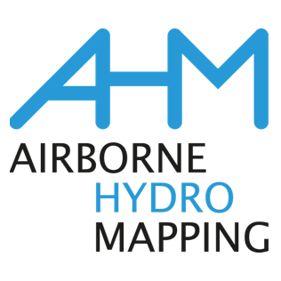

About
Data compression can both alleviate capacity bottlenecks and even improve performance in GPU compute applications. However, integrating compression throughout the entire data processing pipeline is a non-trivial tasks, especially in multi-GPU environments, and doing so manually might encode assumption that make it difficult to test other compression methods.
UMUGUC is a research project that aims to provide a simple-declarative API which allows a runtime system to transparently map accesses to compressed data representations, without requiring any compression-specific code in user programs.
Make it easy to work with end-to-end compressed (dense) data in multi-GPU programs.
Overview
Partners & Funding
UMGUC is funded by the Austrian Research Promotion Agency (FFG) under the BRIDGE programme.
The project partners are the University of Innsbruck, and AirborneHydroMapping GmbH.
UMUGUC is coordinated by Peter Thoman.
